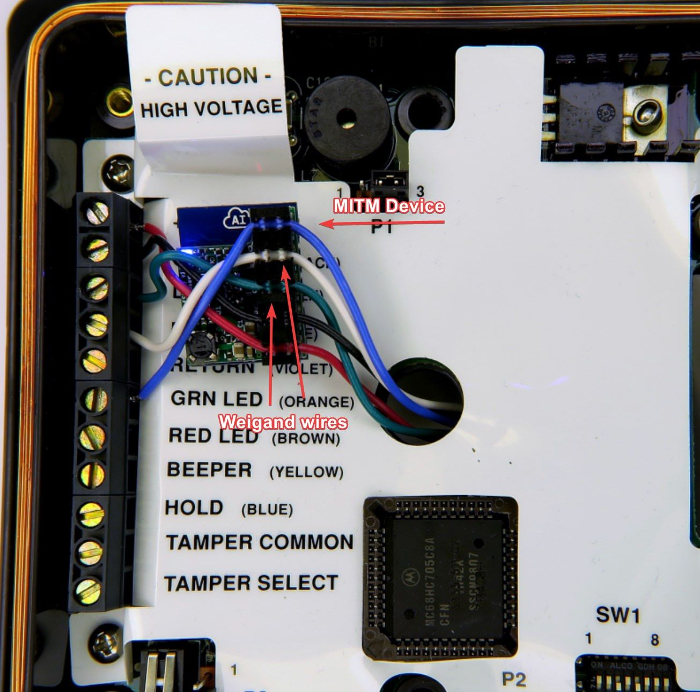
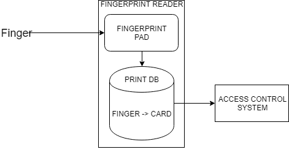

Blog: Access-control exploitation (part 1)
description: One job I was tasked with was getting a fingerprint-based reader tested and operational for demoing our new level of hardware support for more secure facilities, 2 factor physical access control; something you are (fingerprint) and something you know or have. (pin/card)
date published: 2018-10-25 | date updated: 2018-10-25


Fingerprint readers are silly
DISCLAIMER: I used to work for a physical security company architecting access control and surveillance solutions.
One job I was tasked with was getting a fingerprint-based reader tested and operational for demoing our new level of hardware support for more secure facilities, 2 factor physical access control; something you are (fingerprint) and something you know or have. (pin/card)
We were given these readers to test. The readers had a TON of wiring on the back of them. The two important things that the reader pinouts contained was
- Weigand 2-pair access control wire
- POE-enabled RJ45 port
The way that these readers work with existing access control systems completely invalidates the security benefits of using a fingerprint-based authentication system. Let me explain the architecture and design of this system.
First, you must enrol fingerprints on the reader. You essentially scan a fingerprint a handful of times, give it a name, and assign it a badge. Wait, a badge? Yes. The reader contains a local database of every fingerprint in it's system, as well as a **card **associated to this fingerprint. When a fingerprint authenticates and is validated to the local database on the reader, the reader takes the card associated with that fingerprint and relays it over Wiegand wiring to an access control box. This reader is essentially functioning the exact same as a normal fingerprint-less card reader.

The fingerprint reader on the back end/access control provides the exact same level of authentication as a standard card-based system. If the reader is configured to pass through card reads (passthrough mode for 2nd factor, or for card or fingerprint setups) the fingerprints are completely useless.
Potential attack 1: network permeter comprimise
This edge device has an ethernet port.
Which means it has an ethernet cable, which is going to have to tie into an internal access control network to allow it to talk to the provisioning server. Most people put their ICS on the same network. Cameras, access controls, gate controls, HVAC, etc. From the exterior of the building, you now have hardline access to an internal control network.
If this network has any kind of network security (for instance, MAC address filtering), you can pull the MAC of the fingerprint reader directly from a sticker located next to the ethernet port. Spoof that MAC and you have access.
Potential attack 2: device fingerprint datastore compromise
The database containing fingerprint data is stored non-centrally, and every reader has a copy. The enrolment process is
- Scan fingerprint on central server
- Associate card, name, etc to fingerprint
- Push new user profile to all readers on the network
- Reader receives profile, adds it to internal datastore
If you compromise the edge device (reader), you can potentially access this database through their control software, or directly through chip-off forensics. This datastore is going to not just contain fingerprint data, of which I would consider incredibly valuable and sensitive information, it would also contain all associated cards for every user profile.
Unless a mass card revocation is initiated, you now also have a datastore of every functioning, authenticating, door-opening card in the system. Additionally, you may have full names, positions, teams, pictures, etc for every user.
Potential attack 3: Weigand man-in-the-middle
This isn't specifically a fingerprint reader specific attack, but it is just as effective. You can purchase a device that clamps onto the Weigand data wires and can Man-in-the-middle cards over the wire. With this, you can
- offload all cards as they get sent to the access control system
- in-line replace/denial of service on all/selected cards (lock someone out of the building)
- Replay a functioning card without having to have a card cloner/spoofer
Devices like the ESPKey are cheap ($99) and usable with bluetooth or wifi.